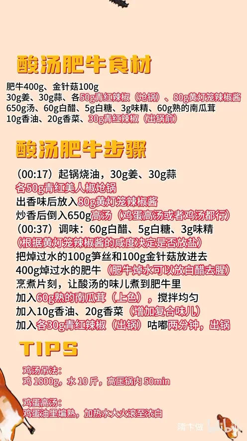

酸汤肥牛
隋卞一做。姜蒜与青红美人椒炝锅，80g 黄灯笼辣椒酱炒香后冲 650g 高汤，用 60g 白醋、5g 白糖定酸辣；焯过水的肥牛配笋丝、金针菇下锅，最后加 60g 熟南瓜茸上色。
原视频：https://www.bilibili.com/video/BV1wq2GYFEsP
食材
肥牛、金针菇、姜 等 15 样
| 类别 | 用料 | 用量 |
|---|---|---|
| 主料 | 肥牛 | 400g |
| 配菜 | 金针菇 | 100g |
| 配菜 | 笋丝 | 100g |
| 炝锅 | 姜 | 30g |
| 炝锅 | 蒜 | 30g |
| 炝锅 | 青红辣椒 | 各 50g |
| 底味 | 黄灯笼辣椒酱 | 80g |
| 底味 | 汤（高汤） | 650g |
| 调味 | 白醋 | 60g |
| 调味 | 白糖 | 5g |
| 调味 | 味精 | 3g |
| 调色 | 熟南瓜茸 | 60g |
| 出锅 | 香油 | 10g |
| 出锅 | 香菜 | 20g |
| 出锅 | 青红辣椒 | 各 30g |
步骤
- 炝锅：起锅烧油，下 30g 姜、30g 蒜、各 50g 青红美人椒炝锅，炒出香味。
- 炒酱：放入 80g 黄灯笼辣椒酱炒香。
- 冲汤：炒香后倒入 650g 高汤，鸡蛋高汤或鸡汤都行。
- 调味：加 60g 白醋、5g 白糖、3g 味精，盐根据黄灯笼辣椒酱的咸度决定是否放。
- 下料：把焯过水的 100g 笋丝、100g 金针菇放进去，再下 400g 焯过水的肥牛（肥牛焯水时可以放白醋去腥），烹煮片刻，让酸汤的味儿煮到肥牛里。
- 调色：加入 60g 熟的南瓜茸上色，搅拌均匀。
- 增香：加入 10g 香油、20g 香菜，增加复合味儿。
- 出锅：加入各 30g 青红辣椒，咕嘟两分钟，出锅。
小贴士
- 鸡汤吊法：鸡 1800g、水 10 斤，高压锅内压 50 分钟。
- 没有鸡汤可用鸡蛋高汤：鸡蛋在油里煸熟，加热水大火滚至汤浓白。
讲解要点
难度：★★☆☆☆（新手可做，难点是黄灯笼辣椒酱的量和酸辣平衡）
为什么这么做
- 姜、蒜、小辣椒先炝锅：这三样是底香，油温够了才出味，后面的酱香才有依托。
- 黄灯笼辣椒酱炒香再冲汤：酱里的辣椒香和发酵香过油才释放，也同时定下这道菜的辣度和汤的黄色底色。
- 用高汤（鸡蛋高汤或鸡汤）打底：清水的汤是「薄」的，试吃时说有厚重感，靠的就是高汤。
- 盐要看酱的咸度决定放不放：黄灯笼辣椒酱本身很咸，先尝再放盐，否则一锅死咸。
- 肥牛先焯水、焯时加点白醋：焯水去血沫和腥气，汤才清；白醋进一步去腥，也让肉更松。
- 熟南瓜茸调金汤：南瓜的自然甜和颜色把酸辣圆起来，也不用另加糖色或油，所以这版清爽不油。
- 香油、香菜、小辣椒最后下，再咕嘟两分钟：香气受热就跑，最后放才闻得到；咕嘟是让酸汤的味反渗进肥牛和配菜。
容易翻车
- 黄灯笼辣椒酱放多，又辣又咸，酸味被压住。
- 肥牛焯过头或者久煮，肉老得嚼不动。
- 白醋不够，只有辣没有酸，成了「辣汤肥牛」。
- 南瓜茸没搅匀，汤里有颗粒、颜色发花。
- 香菜、香油早放，上桌只剩油味没有香。
热评补充
- 有观众提醒：黄灯笼辣椒酱比较辣，建议少放一点、边做边尝辣度，再决定加多少。
原片尾卡

原片文案
AI 字幕校准稿
今天酸汤肥牛，你们大家要的。锅里边放入底油，蒜、姜、小辣椒放进去，给它炝下锅。出香味之后，咱们就要放入黄灯笼辣椒酱，能吃辣就多放点。
炒香了之后倒入高汤，鸡蛋高汤或者是鸡汤都可以。你们什么都不用记，制作方法都会给你们写到片尾。开始调味：白醋、白糖、味精，根据黄灯笼辣椒酱的咸度决定放不放盐，我这不用放。
然后把焯过水的笋丝和金针菇放进去，再下焯过水的肥牛。肥牛焯水的时候可以放点白醋，煮一下，让这酸汤的味煮到肥牛里边去。这个菜有的地方叫酸菜肥牛，有的地方叫金汤肥牛；那个金汤就是这个熟的南瓜蓉，搁上之后一搅拌，立马这汤就变成金汤了。
再放香油、香菜，这都是增加复合味的，然后把咱们刚留那点小辣椒都放进去，咕嘟两分钟出锅。真会挑，那金针菇是真的脆、入味的，这里边金针菇是最入味的。跟高汤吃的真不一样，它有一种很厚重的感觉，跟那个只放味精、鸡精还是不一样的。
好好吃，它的味道一点都不薄，而且你吃着不油，今儿这碗是少油版，非常的清爽。曾经这个菜有一桌连着点了三份，就咱这种做法。大家在家试一下。
整理自「隋卞一做」系列视频，仅供个人学习。